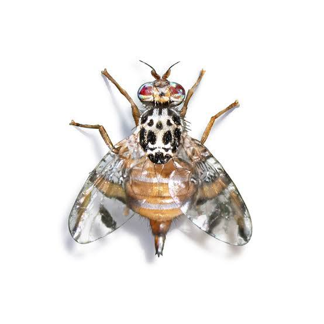

Ceratitis
29 October 2026
Described by Macleay in 1829.
Tribe: Ceratitidini | Species: ~80–100
1 Ceratitis capitata (Wiedemann, 1824)
Common name: Mediterranean fruit fly (Medfly)
Economic importance: One of the world’s most polyphagous pests, infesting over 300 host species. Established on every inhabited continent except Asia. Managed primarily through the Sterile Insect Technique (SIT).

1.1 Research
1.1.1 Gut Microbiota
Researchers: Charles J. Mason, Scott M. Geib
Read paper →
Researchers: Maria Cecilia Rasuk, Alfonsina Palladini
Read paper →
Researchers: Panagiota Koskinioti, Nikos T. Papadopoulos
Read paper →
Researchers: Alfonsina Palladini, Juan Rull
Read paper →
Researchers: Georgia Papadogiorgou, Nikos T. Papadopoulos
Read paper →
Researchers: Alfonsina Palladini, Juan Rull
Read paper →
No papers added yet.
1.1.2 Gene Drives
Researchers: Amber S. K. Hall, Philip T. Leftwich
Read paper →
Researchers: Serafima Davydova, Angela Meccariello
Read paper →
Researchers: Gennaro Volpe, Giuseppe Saccone
Read paper →
1.1.3 SIT
Researchers: Kamel Charaabi, Meriem Msaad Guerfali
Read paper →
Researchers: Alfonsina Palladini, Juan Rull
Read paper →
Researchers: Lucas Henrique Figueiredo Prates, Marc F. Schetelig
Read paper →
1.1.4 Insecticide Resistance
Researchers: Rabeh Arouri, Félix Ortego
Read paper →
1.1.5 Ecology & Behaviour
- Dispersal & Thermal Biology
- Monitoring & Detection
- Chemical Ecology
- Biopesticides & Alternative Control
- Sleep & Ageing
- Stress Physiology & Development
Researchers: Eleftheria-Maria D. Bali, Nikos T. Papadopoulos
Read paper →
Researchers: Mohammed Ahmed Mohammed, Mehmet Bora Kaydan
Read paper →
Researchers: Carmel Katz, Yafit Cohen
Read paper →
Researchers: (first author TBC), (last author TBC)
Read paper →
Researchers: Eleftheria-Maria D. Bali, Nikos T. Papadopoulos
Read paper →
Researchers: Ismail R. El-Gendy, Abdelbaky A. Khodair
Read paper →
Researchers: Tugberk Tuncyurek, Neslihan Gulec
Read paper →
Researchers: Salvador Flores, Jorge Toledo
Read paper →
Researchers: Poorbita Kundu, Hans-Georg Müller
Read paper →
Researchers: M. Kamilari, A. A. Augustinos
Read paper →
Researchers: Paraschos N. Prekas, Nikos T. Papadopoulos
Read paper →
1.1.6 Methods
Researchers: Peishih Liang, Charles J. Mason
Read paper →
Researchers: Tugberk Tuncyurek, Hanife Yandayan Genc
Read paper →
1.1.6.1 Researchers
Affiliation: University of East Anglia, UK
Themes: Gut microbiota, gene drives, CRISPR tooling
Personal website →
Affiliation: University of East Anglia, UK
Themes: Gut microbiota, gene drives
Google Scholar →
Affiliation: USDA-ARS, USA
Themes: Gut microbiome composition, SIT quality control
Google Scholar →
Affiliation: Imperial College London, UK
Themes: Cisgenic sexing strains, gene drives
Google Scholar →
Affiliation: University of Thessaly, Greece
Themes: Dispersal, thermal biology, gut microbiota, development
Affiliation: (TBC — Argentina)
Themes: Microbiota, stress tolerance, SIT, holobiont